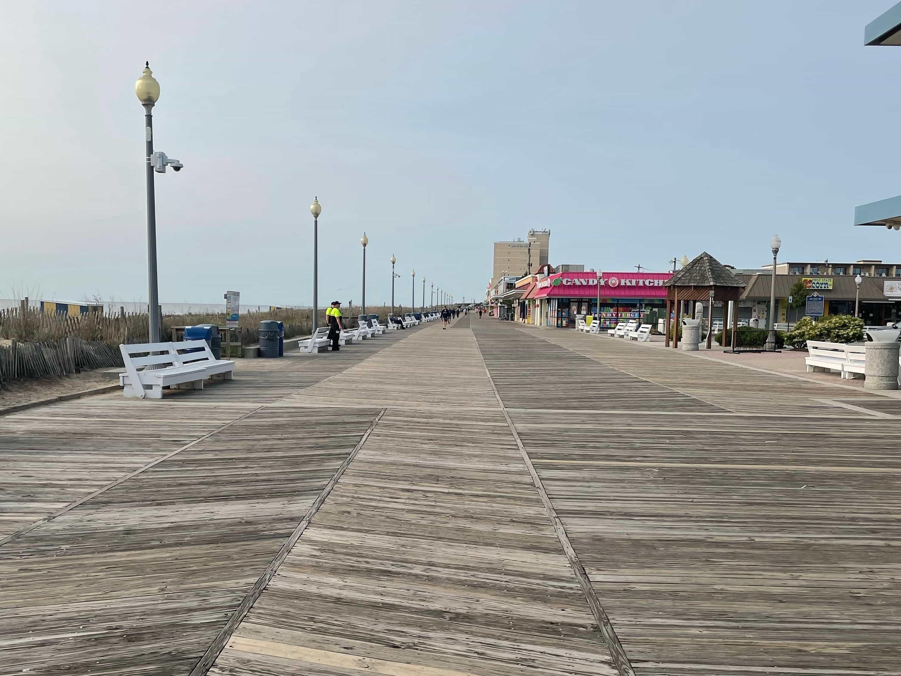

Walk onto the Rehoboth boardwalk from Rehoboth Avenue on a July evening and the smell arrives in a specific order, the same one every single night. First it's pizza — the particular sweetness of Grotto's sauce, cut with melted cheese, carrying half a block in either direction. Then, closer to the taffy shops, sugar takes over: warm, slightly burnt, the smell of a candy-pulling machine that's been running all day.
By the time you hit the sand, it's sunscreen and salt air doing all the work, with a faint charcoal drift from someone's beachfront grill a few blocks down. It's a strange, specific combination that doesn't exist anywhere else — not at the mall, not at another beach, not in a candle no matter how hard some company tries.
Locals stop noticing it by June. Visitors notice it every single year, usually saying some version of the same thing: it smells like summer. Not summer in general — this one, specifically, the Rehoboth one, the one that's been more or less the same smell since Dolle's started making taffy on the boardwalk in 1926.
It's worth a slow walk sometime, phone away, just to notice the handoff — pizza to taffy to salt — the whole thing over in about four blocks.